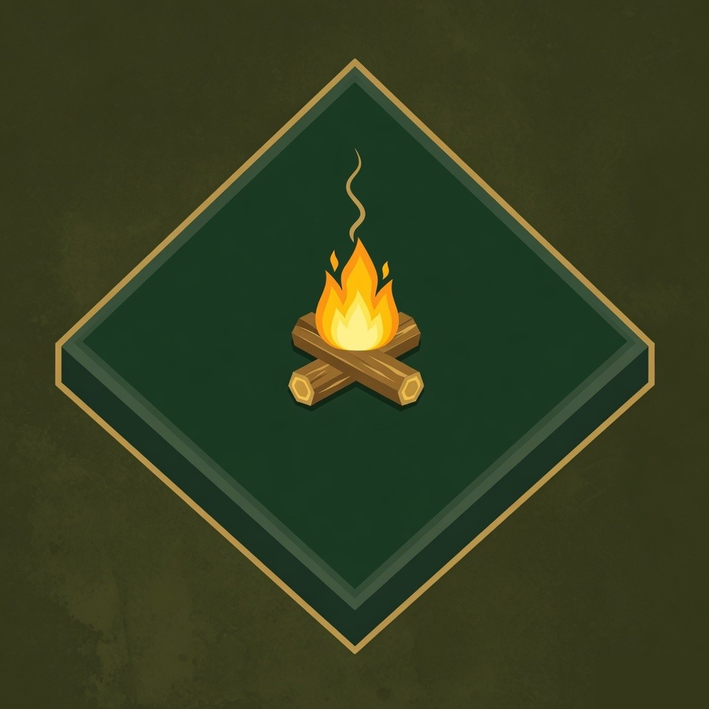
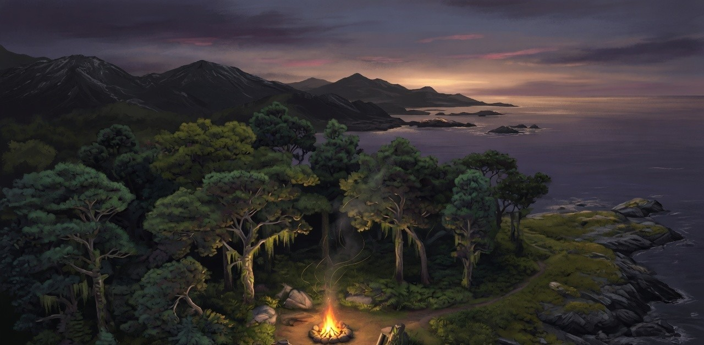
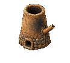
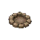
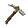
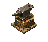
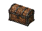

Overworld
Coasts, forests and camps
Follow rivers to the beach, gather sticks, rocks and shells, and turn a wild clearing into a place worth returning to.

Island RPGEarly access · Version 0.4
A free isometric survival RPG for Windows. Chop, mine, cook and dig through a persistent world — then host a dedicated server and play it with friends.

Play together
Host a world or join a friend. The person you create is the person who arrives — name, colour and gender stay with you. Walk, pick up, craft, trade and follow with the same cursors as single-player.
The world
Every seed is a full island and the caves beneath it. Trees you fell, holes you dig, fires you light and chests you place are still there when you come back.
Overworld
Follow rivers to the beach, gather sticks, rocks and shells, and turn a wild clearing into a place worth returning to.

Underground
Excavate a shaft, hang a rope and descend into persistent caves with ore, ruins and darker things that hunt first.

Survival
Cook fish and berries, keep a fire lit, and watch day turn to night while local lights pool around camp.
A closed loop

Fish, forage, chop and mine what the biome actually has.
Burn charcoal, smelt blooms and cook meals at real stations.

Forge better tools and unlock the next placeable station.

Store the haul, range farther and come back richer.
Versions
Host or join a dedicated world, keep your chosen character, and share pickup, combat, trade and follow.
Read the 0.4 notesAutonomous survivors, a shipwreck opening, biome slimes and unified combat.
Read the 0.3 notesUnderground exploration, mining, metalworking, cooking and persistent storage.
Read the 0.2 notesThe playable foundation: procedural islands, survival skills, crafting and saves.
Read the 0.1 notesDevelopment
Devlogs, playtests and release clips land on YouTube and X. Source and issues live on GitHub.
Install
Island RPG targets Windows and needs a legally owned Age of Empires II HD install for compatible classic graphics. Those assets are never bundled or redistributed.
Island RPG is an unofficial, non-commercial project by SamG-Coder. Age of Empires is a trademark of Microsoft.